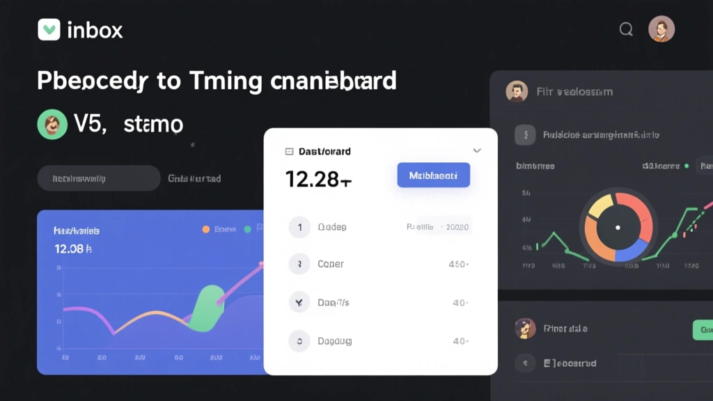
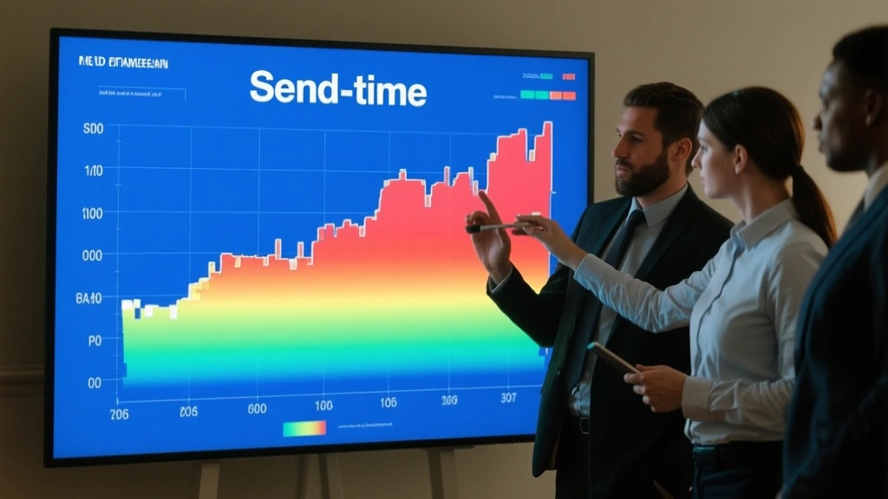

Shifting a fraction of your send-time strategy can lift opens, clicks, and revenue without touching content or design. This article decodes the real drivers behind timing, shares field-tested rules of thumb, and shows how to align send windows with customer rhythms—without becoming a slave to the clock.

The Timing Paradox: Why Not Just Send All at 9 A.M.?
Most teams treat send time as a fixed variable, but delivery ecosystems are dynamic. The same email can perform differently based on recipient time zones, device usage, and even weekend patterns. The paradox is simple: sending when a subscriber actively checks email can outperform broad daytime blasts, but you still need to account for time-zone distribution across your list and the propensity of segments to engage at different hours.
Instead of chasing a universal sweet spot, map active windows by segment. For a B2C list, early-evening openings tend to spike after-work routines; for B2B buyers, late morning in business hours often correlates with high engagement, when people skim for decisions before lunch.

Three Actionable Timers You Can Trust
- Segment-aware windows: Use 3–5 regional windows rather than a single global send time.
- Drip of timing data: Run daily experiments with small batches to avoid large, disruptive shifts.
- Align with intent signals: Schedule follow-ups when a recipient shows intent (e.g., click, engage, or browse).
- Combine lifecycle timing: Welcome and onboarding emails should land during scales of initial curiosity, while re-engagement should try at times when users previously interacted.
Two Worlds: Personalization vs. Global Send Plans
Two-phased timing helps: personalize to individual rhythms when you have robust data, and maintain a conservative but smart global schedule when data is thinner. For lists with diverse geographies, a practical approach is to expose a few default windows, then let subscribers opt in to preferred send times. This preserves engagement without increasing fatigue.
Sending at a single global time fails to respect regional rhythms, causing wasted impressions and lower CTR.
Adopt 3–5 regional windows and tailor follow-ups to engagement signals, not the clock alone.
Metrics That Matter (Beyond Open Rates)
Be mindful of frequency. Pushing too many emails during optimal windows can backfire if recipients perceive you as blasting them at the same time every day. Use cadence controls to avoid fatigue.
Stage-by-Stage Timing Plan
-
1Audit your audienceIdentify top-performing time zones and segments. Build a 3-window plan per region and test for two weeks.
-
2Run controlled experimentsUse 10–15% of your list per window to validate lift before full rollout.
-
3Scale with safeguardsAutomate window assignment and set frequency caps to avoid fatigue.
The Bottom Line
Timing is a practical amplifier for email revenue. Start with regional windows, back your plan with small, rapid experiments, and weave timing into lifecycle messaging. The result is not just more opens, but more revenue per message.